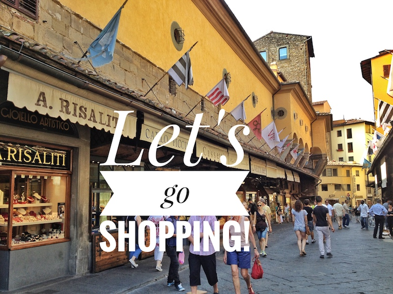

Photo by Francesca Tosolini
If you purchase or plan to purchase a lot of things in Italy, I suggest to bring an extra suitcase or to buy one there (you can find cheap ones at one of the many small stores). The cost of the suitcase added to the extra fee charged by the airline can be cheaper than mailing stuff from Italy, not to mention that it surely saves you time and most importantly a lot of hassles. Sending big packages via airmail is very expensive, while via ship is cheaper, even though it can take up to three months to get to destination. {This is an excerpt from chapter 9 “The post office” of the eBook “Italy from the Inside. A native Italian reveals the secrets of traveling in Italy”}